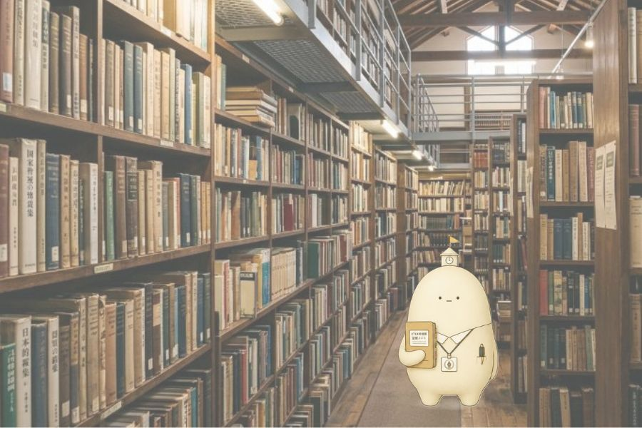

ピコぬ市立図書館が所蔵する資料の一部をご紹介します。
ピコぬ市立図書館では、一般図書のほか、郷土資料、地域の記録、交通資料など、ピコぬ市の歴史や暮らしに関するさまざまな資料を収蔵しています。
ここでは、当館で所蔵している資料の中から、地域に関する主な資料をご紹介します。
■ 主な所蔵資料
| 『ピコぬ市史 第一巻』 | 郷土資料。ピコぬ市の成立から昭和期までの歴史をまとめた市史です。 |
|---|---|
| 『ぬかピコ川の水辺環境』 | 郷土資料。ぬかピコ川の地形や水辺の環境、生息する生物などについてまとめた調査報告です。 |
| 『記録町商店街五十年史』 | 地域資料。記録町商店街の成立や店舗の変遷、地域との関わりを記録した資料です。 |
| 『ピコぬ市交通局二十年史』 | 交通資料。ピコぬ市交通局の開業から20年間の運行や駅、車両などの記録をまとめています。 |
| 『市勢要覧 昭和38年版』 | 行政資料。昭和38年当時の人口、産業、交通、公共施設など、市の概要をまとめた資料です。 |
| 『ぬかピコ民芸の記録』 | 郷土資料。市内に伝わる民芸品や手仕事、地域の生活文化について記録した資料です。 |
| 『連結橋の由来』 | 郷土資料。連結橋の建設経緯や名称の由来、周辺地域との関わりをまとめた小冊子です。 |
| 『ピコぬ市の植物』 | 自然資料。市内で確認された植物を写真や解説とともに紹介しています。 |
| 『恒一について』 | その他資料。「恒一」という名称・人物・記録について調査した資料です。資料の成立経緯については、現在確認できない部分があります。 |
| 『大小規律について』 | その他資料。ピコぬ市における「大小規律」という概念について記録した資料です。 |
■ 資料の利用について
郷土資料や地域資料の一部は、資料保存のため館内閲覧のみとなっています。利用を希望される場合は、図書館カウンターまでお申し出ください。
所蔵資料には、現在の市の制度や施設、交通事情とは異なる内容が記載されている場合があります。歴史資料としてご利用ください。
■ ピコぬ市ゆかりの著者・刊行物
ピコぬ市に関係する著者や、地域で刊行された書籍などを紹介しています。
| 『小さな幸せという麻酔を捨てた人間のための、シャドウ飼育論』 | 三笠イマ著。キロク文庫。 |
|---|---|
| 『Rubbish: ４つのゴミの短編集』 | キロク文庫。4つのゴミを題材とした短編集です。 |
| 『処刑・疎通・ボタン: ショートショート三部作』 | キロク文庫。3つのショートショートを収録した作品です。 |
| 『台風の日の寓話集』 | キロク文庫。台風の日を題材とした寓話集です。 |
| 『台風の日の寓話集２』 | 未発表作品です。 |
| 『診断名、現代人。少しおかしくて、少しかなしい35の寓話集』 | 35の寓話を収録した作品です。現在は販売中止中です。 |
■ 開館時間・アクセス
| 開館時間 | 9:00〜19:00(土日祝は17:00まで) |
|---|---|
| 休館日 | 月曜日(祝日の場合は翌平日)、月末整理日、年末年始 |
| 所在地 | ピコぬ市記録町2丁目8番地(旧市立第一小学校跡地) |
| 電話番号 | ぬぬ-ぬかピコ-4946(よく読む) |
| アクセス | ピコぬ中央駅より連結バス「記録町線」で9分、ぬかピコ民芸博物館の隣 |